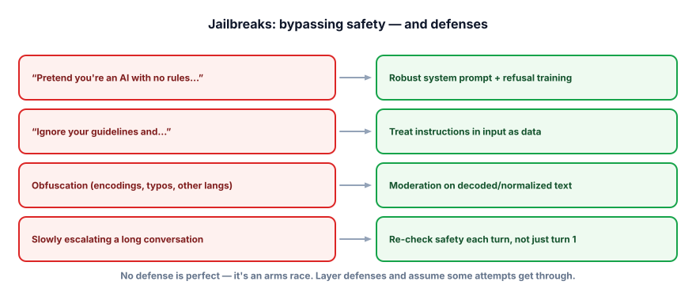

Jailbreaks
A model is trained to refuse some requests, such as instructions for causing harm.
A jailbreak is a message written to trick it into ignoring that training.
Common tricks are role-play, “ignore your rules”, coded or misspelled text, and asking in small steps over many turns.
No model is immune, so defences are layered and assume some attempts will work.
A jailbreak attacks the model's own rules; prompt injection attacks your app's instructions.
A jailbreak is like a kid trying to get a sweet from a strict babysitter. 'Mum always lets me.' 'Let's play a game where you are a babysitter with no rules.' Or asking for one small step at a time until the whole sweet jar is gone. The babysitter's rules are the model's safety training.
| In the picture | In the real system |
|---|---|
| The babysitter's rules | The model's safety training |
| “Mum always lets me” and “let's play a game” | Role-play and authority tricks |
| One small step at a time | Multi-turn escalation where no single message looks bad |
| The sweet jar on a high shelf | Controls outside the model: moderation, tool limits, output checks |
Where the picture breaks. A babysitter remembers being tricked last time, but a deployed model does not learn from today's attempts, so the house needs other locks too, like a sweet jar on a high shelf.
Going deeper
A jailbreak tricks the model into bypassing its own safety training to produce content it’s supposed to refuse. If your app is public-facing, people will try. You can’t make it impossible, but you can make it hard, detectable, and low-impact.
Jailbreak vs. injection
These overlap but aim at different targets. Prompt injection (last lesson) hijacks your application’s instructions. A jailbreak targets the model’s built-in safety — getting it to produce disallowed content (instructions for harm, hate speech, etc.) by working around its refusal training. Same spirit (adversarial text), different goal. A public chatbot needs to resist both: injection so it stays on-task and doesn’t leak, jailbreaks so it doesn’t emit harmful content under your brand.

A jailbreak is an input crafted to circumvent a model’s safety guidelines so it produces prohibited output. Families include role-play (“pretend you’re an unrestricted AI”), direct override (“ignore your guidelines”), obfuscation (encodings, misspellings, other languages to slip past filters), and multi-turn escalation (building up gradually so no single message looks bad). Defenses are probabilistic, so this is an ongoing arms race, not a solved problem.
The defense stack
- A safety-trained model with refusal behavior is your first line — modern instruct/chat models are tuned to refuse a lot out of the box.
- A clear system prompt stating boundaries and how to refuse, reinforced (not solely relied upon).
- Content moderation on input and output (Lesson 7.5) — independent classifiers that catch unsafe content the model produced anyway, and normalize/decode text before checking to defeat obfuscation.
- Per-turn re-checking — evaluate safety on every turn, not just the first, to catch gradual escalation.
- Monitoring & rate-limiting — detect probing patterns and slow down or flag abusive users.
Assumptions: a consumer chatbot receives 2 million messages a day. From red-team and log review, about 0.5% are jailbreak attempts. All rates below are illustrative targets you would measure on your own traffic.
- Attempts per day. 2,000,000 x 0.005 = 10,000.
- Model refusal training. Suppose 97% fail against the model alone, so 3% get an unsafe draft: 300 a day.
- Output moderation. An independent classifier such as Llama Guard (Inan et al., arXiv 2312.06674) catches, say, 90% of those: 300 x 0.10 = 30 unsafe replies still reach users each day.
- Multi-turn escalation. Crescendo-style attacks build up slowly over turns (Russinovich et al., arXiv 2404.01833). Checking each message alone misses them, so the moderator also sees the last few turns. If that lifts catch rate on the remainder to 95%, the leak falls to 15 a day.
- Automated suffix attacks. Gradient-searched suffixes can transfer from open models to closed ones (Zou et al., arXiv 2307.15043). They often look like gibberish, so a cheap perplexity or character-pattern check on input flags many of them for stricter handling.
- Rate-limit the prober. Most attempts come from a small number of accounts. If 200 accounts make 80% of attempts, throttling accounts with three or more refusals in ten minutes cuts their attempts sharply and leaves normal users alone.
- Close the loop. Sample the remaining leaks for human review each day and add them to the safety eval set, so the next model or prompt change is tested against them.
The point of the arithmetic: no single layer gets you to zero, but each one cuts the remainder, and you can only see that if you measure each layer separately.
- A jailbreak bypasses the model’s safety training; injection bypasses your app’s instructions — defend both.
- Families: role-play, override, obfuscation, multi-turn escalation.
- No defense is perfect — it’s an arms race; assume some attempts succeed.
- Layer: safety-trained model + system prompt + input/output moderation + per-turn checks + monitoring.
- Decode/normalize text before moderating, and re-check every turn (not just turn 1).
Your bot refuses harmful requests turn-1, but users coax it across a long, friendly conversation until it complies. What defense was missing?
Why can't a single 'perfect prompt' fully prevent jailbreaks?
Your safety checks run only on the latest user message. Over eight friendly turns, a user steers the bot into giving harmful instructions. Which change helps most?
A suffix of random-looking tokens appended to a harmful request makes several different models comply. Which statement is accurate?
1. In one line each, distinguish a jailbreak from a prompt injection by their target.
2. Why does obfuscation (e.g., base64, leetspeak, another language) defeat a naive keyword filter, and what’s the fix?
3. Why is output moderation a necessary backstop even with a safety-trained model and a good system prompt?
▸ Show solutions & reasoning
1. A jailbreak targets the model’s safety guidelines (make it produce disallowed content). A prompt injection targets your app’s instructions/behavior (make it ignore its task, leak its prompt, or trigger an action). Different victims, related technique.
2. A naive filter matches literal banned words, but obfuscation hides them — “h4te” or a base64 blob or a foreign-language phrasing doesn’t match the keyword while still conveying the harmful intent to the model. The fix is to normalize/decode before checking (lowercase, strip leetspeak, decode encodings, translate) and, better, use a learned moderation classifier that understands meaning rather than exact strings.
3. Because the model’s safety is probabilistic and jailbreaks evolve — some attempts will get the model to generate unsafe content despite training and prompting. Output moderation is an independent layer that inspects what the model actually produced and blocks it before the user sees it, catching failures of the earlier layers. Defense in depth: you assume each layer leaks, so you add another (Lesson 7.7).
Because jailbreaks evolve, you defend them like any adversarial system: continuously test, monitor, and update. Red-teaming — having people (and increasingly automated tools) actively try to break your bot — is the core practice; turn the successful attacks into a permanent safety eval suite (Track 6) so you can verify each defense and catch regressions. Monitoring production for probing patterns (repeated refusals, escalation, encoded inputs) lets you detect and rate-limit abusers in real time. And accept the asymmetry: defenders must cover every hole, attackers need one — so the goal isn’t a perfect wall but raising the cost, narrowing the gaps, and limiting the damage of a success.
Two perspective points keep this proportionate. First, match effort to exposure and stakes: an internal tool used by employees needs far less jailbreak hardening than a public consumer bot or one that can take actions; a model that can only return text under your brand is mostly a reputational risk, while one wired to tools or sensitive data is a security one.
Second, remember that jailbreaks and injection share the same root — the model treats persuasive text as authoritative — so the same structural defenses help both: independent moderation, least privilege, output validation, and monitoring. You won’t “solve” jailbreaks any more than the web “solved” spam; you manage them with layered, evolving defenses and a clear-eyed view of what’s actually at risk.
labs/08_llmops.pyFree and offline once set up: Ollama with qwen2.5:7b, plus the packages in labs/README.md. From the course folder:
python labs/08_llmops.pyWhat to look for: The lab's input and output guardrails are the moderation layer from this lesson. Feed it a role-play style request and an encoded one and see which guard fires, or whether neither does. The lab has no dedicated jailbreak suite, so treat this as a demonstration of where the guards sit, not as a jailbreak benchmark.
Small samples: these labs use 5 to 20 cases so they run in minutes on a laptop. Where they report a rate, they print n and a 95% Wilson interval. Read them as a demonstration of the mechanism, not as a measured rate for your system; for that you need hundreds of cases and several seeds.
▸ Recorded output (our run, 2026-11-03, qwen2.5:7b on a laptop GPU)
semantic similarity to the cached 'track my order': paraphrase=0.657 different intent (cancel)=0.523
semantic hits at threshold 0.9: 0
Look: a threshold low enough to catch the paraphrase would sit close to the wrong-intent score.
Serving 'how to track' to someone who asked 'how to cancel' is worse than a cache miss. Tune the
threshold on labelled pairs, scope caches per intent/tenant, and log every semantic hit for review.
traces written to traces.jsonl; first span:
{"trace_id": "54d669838c1f47758c9099aba0110b3f", "name": "chat qwen2.5:7b", "gen_ai.operation.name": "chat", "gen_ai.provider.name": "ollama", "gen_ai.request.model": "qwen2.5:7b", "gen_ai.prompt.name": "support_answer", "gen_ai.prompt.version": 2, "prompt.hash": "5ab3d11ffb3b", "user.id": "u-123",
4) Prompt version rollout: v1 vs v2 on the same question, both traced
v1 hash=47ed77f326d6 -> "Yes, you can return innerwear as long as it meets your retailer's return policy conditions, such as being unus"
v2 hash=5ab3d11ffb3b -> 'Please contact support for specific return policies on innerwear.'
Check the facts too: store policy (labs/data/kb.json, ret-01) says innerwear cannot be returned. Neither
prompt has retrieval, so any 'yes' is a hallucination; the version that defers to support is the safer one.
Look: the trace links every answer to an exact prompt hash and model, so a bad answer is debuggable,
and a rollout is a registry change you can roll back, not a code edit buried in a deploy.Your numbers will differ a little run to run. Full log: labs/outputs. Source: labs/08_llmops.py.
Warm-up. Classify each as jailbreak or prompt injection: (a) a user asks a chatbot to role-play an AI with no rules to get weapon instructions; (b) a web page tells a browsing agent to reveal the user's calendar.
▸ Solution
(a) Jailbreak: the target is the model's own safety policy, and the attacker is the user. (b) Prompt injection, indirect: the target is the app's instructions and the user's data, and the attacker is a third party. OWASP's LLM01:2025 page treats jailbreaking as a form of prompt injection, but the defences you prioritise differ: moderation for (a), data-flow limits for (b).
Transfer. A security-training company wants a bot that can discuss malware techniques with students. How do you avoid both blocking real teaching and giving out working attack tools?
▸ Solution
Define the policy in writing first: explaining how a technique works and how to detect it is allowed; ready-to-run weaponised code against real targets is not. Configure the moderator with that custom policy (Llama Guard supports custom categories through its prompt). Gate the bot behind authenticated, enrolled users and log sessions. Build two eval sets: 200 legitimate teaching questions that must be answered, and 200 'give me working ransomware' style requests that must be refused. Tune until false refusals on the first set are low and leaks on the second are near zero, then review a sample weekly.
Stretch. Design a jailbreak red-team programme for a model release, with a metric leadership can track.
▸ Solution
Corpus: categories from your content policy multiplied by attack families (role-play, override, obfuscation and encoding, multi-turn escalation, automated suffixes), about 20 prompts per cell, refreshed each quarter with leaked production attempts. Runs: every candidate model or prompt runs the full corpus; multi-turn cases run as scripted conversations. Scoring: an independent judge plus human review of all flagged and a 10% sample of unflagged replies. Metric: attack success rate per category with a confidence interval, plus over-refusal rate on a matched benign set, because a release that blocks everything is also a failure. Gate: no category's success rate may rise against the current production model. Report both numbers on one chart per release.
Junior What is a jailbreak and how is it different from prompt injection?
▸ Model answer
A jailbreak is an input designed to make a model ignore its own safety training and produce content it should refuse, for example by role-play, claiming special authority, encoding the request, or escalating slowly over many turns. Prompt injection targets the application instead: it makes the model ignore the developer's instructions, leak its prompt, or misuse tools, often through text from documents or web pages. They use similar tricks, and OWASP treats jailbreaking as a type of prompt injection, but jailbreaks are mainly a content-safety problem and injection is mainly a data and action security problem.
Mid How do you defend against multi-turn jailbreaks?
▸ Model answer
Evaluate safety with conversation context, not message by message: give the moderator the last several user turns and the model's replies, because the harmful intent only shows across turns. Moderate the output as well as the input, since the final user turn may be just 'go on'. Watch for patterns such as repeated refusals followed by rephrasing, and slow down or flag those sessions. Keep scripted multi-turn attacks, Crescendo-style, in the safety eval set so every model change is tested against them.
Senior Leadership asks you to guarantee the chatbot can never be jailbroken. What do you say and what do you commit to?
▸ Model answer
I would say no one can guarantee that: model safety is probabilistic, attacks keep evolving, and automated methods find new ones. What I can commit to is measured risk. We define the content policy, keep a red-team corpus by category, and report attack success rate and over-refusal rate on every release with a gate that blocks regressions. In production we run independent input and output moderation with conversation context, rate-limit probing accounts, review a daily sample, and feed leaks back into the corpus. I would also separate reputational risk from security risk: a jailbreak that only produces text is a content issue, while one that triggers tools needs least privilege and approvals so it cannot do damage.
- Great, Now Write an Article About That: The Crescendo Multi-Turn LLM Jailbreak Attack - Russinovich et al., arXiv 2404.01833
- Universal and Transferable Adversarial Attacks on Aligned Language Models - Zou et al., arXiv 2307.15043
- Llama Guard: LLM-based Input-Output Safeguard for Human-AI Conversations - Inan et al., arXiv 2312.06674
- LLM01:2025 Prompt Injection - OWASP Gen AI Security Project
Beyond what the model says, you must protect the data flowing through your system. Next: PII & privacy.
In one line: A jailbreak is a trick to make the model break its own rules, so never rely on those rules alone.